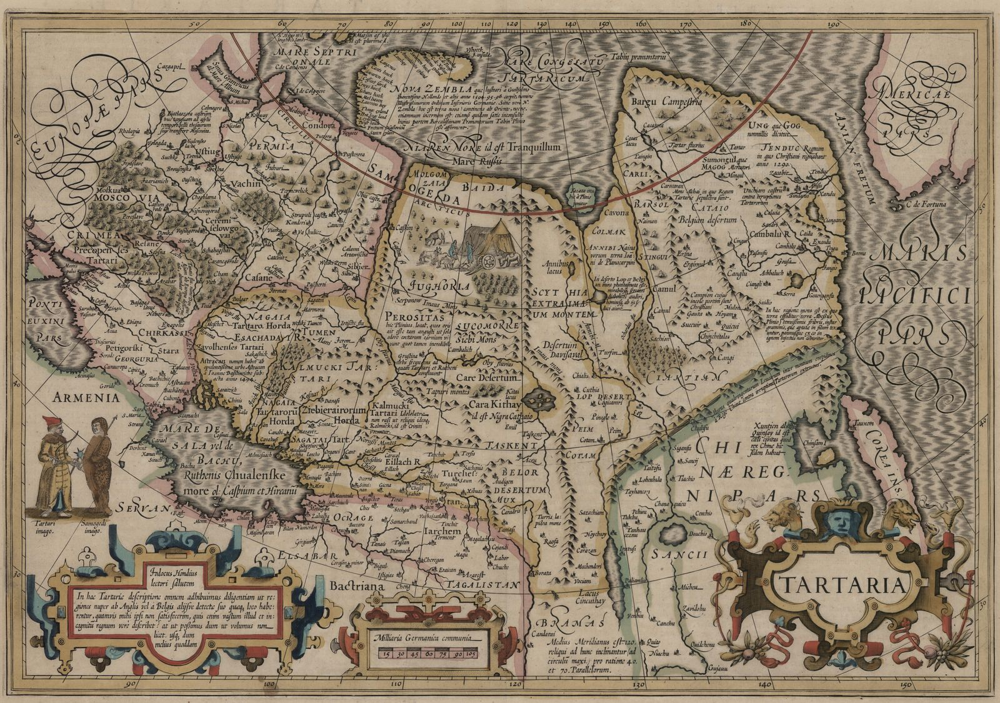

Tartaria

Machine transcription (Claude Opus 5.5, 25 Nov 2026), not yet reviewed by a specialist. [?] marks an uncertain reading. The text on the back was compared with the project team's transcription (each difference checked on the scan by the AI); the texts on the map have not been checked yet.
Jodocus Hondius's map of Tartary, from the first Latin edition of the Mercator–Hondius Atlas (Amsterdam, 1606). It stretches from Muscovy and the Caspian to Korea and the strait of Anian, with two costume figures, an address to the reader, and notes on Gog and Magog, the tombs of the khans, Christian Tenduc, the Great Wall and asbestos. An AI model, Claude Opus 5.5, read the map from the HKUST copy without any reference text: 99 texts and notes, which can be read in the panel and the tour, and 324 place names, shown under “Towns, rivers and lakes” in the filter. Turn the sheet over for the atlas's description of Tartary (pp. 333–334), shown from the Utrecht University Library copy, in passages that follow its printed margin notes. The reading was compared with the project team's transcription, and every difference was checked on the scan by the AI, not yet by a person.
Iodocus Hondius lectori salutem
Iodocus Hondius [Jodocus Hondius] greets the reader.
Show on the mapIn hac Tartariæ descriptione omnem adhibuimus diligentiam ut regiones nuper ab Anglis vel à Belgis aliisve detectæ suo quæque loco haberentur, quamvis mihi ipsi non satisfecerim, quis enim vastum illud et incognitum regnum verè describet? at ut possimus dum ut volumus non licet. usque dum melius quoddam
In this description of Tartary we have applied every diligence, so that the regions lately discovered by the English or by the Belgae [Netherlanders] or by others should each be held in its proper place, although I have not satisfied myself; for who will truly describe that vast and unknown kingdom? But [we do] as we can, since as we would is not allowed, until [there is] something better.
Show on the mapTARTARIA
Tartary.
Show on the mapTanais fluvius nunc Don qui Asiam ab Europa disterminat; abundat copia piscium
The river Tanais, now [called] the Don, which divides Asia from Europe; it abounds in a plenty of fish.
Show on the mapMatsin af ysle[?]: id est plurimæ Insulæ
Matsin af ysle [?], that is, a great many islands.
Show on the mapSinus Granvicus alias Mare Album
Granvicus Gulf, otherwise the White Sea [White Sea].
Show on the mapBiatlaozera castrum huc tanquam ad asylum tempore belli thesaurum suum transfert Moscovita.
Biatlaozera, a castle. Hither, as to a place of refuge, the Muscovite moves his treasure in time of war.
Show on the mapAstracan nomen habet ab opulentissima urbe Astracan à Ioanne Basiliwiche subacta anno 1494.
Astracan takes its name from the very rich city of Astracan, subdued by Ioannes Basiliwiche [Ivan Vasilyevich] in the year 1494.
Show on the mapMARE DE SALA vel de BACHU, Ruthenis Chualenske more olim Caspium et Hircanum
Sea of Sala or of Bachu; by the Ruthenians [Russians] called Chualenske more; formerly the Caspian and Hyrcanian [Sea] [Caspian Sea].
Show on the mapNOVA ZEMBLA quæ lustrari à Guiljelmo Barentsono Hollando et alijs anno 1594, 95, 96 cœpit, nomine Illustrissimorum Ordinum Inferioris Germaniæ. Sitne verò N. Zembla (hoc est terra nova) continens ab Oriente, necne, etiamnum incertum est: etiamsi quidam satis inconsultè hujus partem Borealissimam Promontorium Tabin Plinio esse affirment.
NOVA ZEMBLA, which Willem Barentsz of Holland and others began to explore in the years 1594, 95 and 96, in the name of the Most Illustrious States of Lower Germany [the States General of the Netherlands]. Whether Nova Zembla (that is, new land) is joined to the continent in the east or not is still uncertain, although some, rather rashly, assert that its most northerly part is Pliny's promontory Tabin.
Show on the mapNIAREN MORE id est Tranquillum Mare Russis
NIAREN MORE, that is, the Calm Sea, to the Russians.
Show on the mapTazata insula hic à Plinio ponitur
The island Tazata is placed here by Pliny.
Show on the mapPEROSITAS hic Plinius locat, quos oris ait esse tam angusti ut solo odore coctarum carnium vivant quot tamen incredibile
PEROSITAS. Pliny places here [the people] whose mouths, he says, are so narrow that they live on the mere smell of cooked meat; which, however, is incredible.
Show on the mapGrustina urbs frequens ad quam Tartari et Rutheni confluunt
Grustina, a much-frequented city, to which Tartars and Ruthenians [Russians] flock together.
Show on the mapCara Kithay id est Nigra Cathaio
Cara Kithay, that is, Black Cathay.
Show on the mapKalmucki Tartari Idololatræ non rasi ut reliqui ideoque Kalmucki, id est Criniti vocantur.
The Kalmucki Tartars, idolaters, not shaven like the rest, and therefore called Kalmucki, that is, 'the long-haired'.
Show on the mapMedius Meridianus est.120. reliqui ad hunc inclinantur (ad circulum maximum) pro ratione 40. et 70. Parallelorum.
The middle meridian is 120 [degrees]. The others incline towards it (towards a great circle) in proportion to the 40th and 70th parallels.
Show on the mapUNG quae GOG nonnullis dicitur
Ung, which by some is called Gog.
Show on the mapTENDUC Regnum in quo Christiani regnabant anno 1290
The kingdom of Tenduc, in which Christians reigned in the year 1290.
Show on the mapMons Alchai in quo Regum Tartariae sepulchra sunt
Mount Alchai, on which are the tombs of the kings of Tartary.
Show on the mapUnchiam castrum contra irruptiones Tartarorum
Unchiam, a fortress against the incursions of the Tartars.
Show on the mapANNIBI Nainavorum terra Ioanni de Planocarpini
Annibi, land of the Nainavi, according to Ioannes de Planocarpini [John of Plano Carpini].
Show on the mapIn deserto Lop et Belgian mira phantasmata esse, mirabilesque sercatos[?] diabolicos audiri, hominesque ab ijs seduci aiunt
They say that in the desert of Lop and Belgian there are wondrous phantoms, and that marvellous diabolical [?] are heard, and that men are led astray by them.
Show on the mapCampion cujus incolae partim sunt Christiani
Campion, whose inhabitants are partly Christians.
Show on the mapIn hac regione mons est ex quo terra effoditur (terra Abessus Plinio) tenuissimis fribris, instar graminis, quae aptatae in filum texuntur, pannusque ex eo in ignem injectus non comburitur.
In this region there is a mountain from which an earth is dug (the earth Abessus [asbestos] of Pliny) with very fine fibres like grass, which, once prepared, are woven into thread; and a cloth made of it, thrown into the fire, is not burnt.
Show on the mapMurus quadringentarum Leucarum inter montium crepidines à Rege Chinæ contra irruptiones Tartarorum extructus.
A wall of four hundred leagues between the edges of the mountains, built by the King of China against the incursions of the Tartars.
Show on the mapXuntien alias Quinsay id est cæli civitas quod rex Chinæ hic sedem habeat
Xuntien, otherwise Quinsay, that is, the city of heaven, because the King of China has his seat here.
Show on the mapMilliaria Germanica communia 15 30 45 60 75 90 105
Common German miles: 15, 30, 45, 60, 75, 90, 105.
Show on the mapEUROPÆ PARS
Part of Europe.
Show on the mapMOSCOVIA
Muscovy.
Show on the mapCRIMEA
Crimea.
Show on the mapResane
Resane [Ryazan].
Show on the mapPrecopenses Tartari
The Perekop Tatars.
Show on the mapPONTI EUXINI PARS
Part of the Euxine Sea [Black Sea].
Show on the mapCHIRKASSI
The Circassians.
Show on the mapPetigorski
Petigorski [the Pyatigorsk Circassians].
Show on the mapStara
Stara.
Show on the mapGEORGURIA
Georguria [Georgia]
Show on the mapARMENIA
Armenia
Show on the mapSERVAN
Servan [Shirvan]
Show on the mapSamogedi imago.
Image of a Samoyed.
Show on the mapTartari imago.
Image of a Tartar.
Show on the mapMARE SEPTRIONALE
Northern Sea.
Show on the mapCondora
Condora.
Show on the mapPERMIA
Permia [Perm].
Show on the mapUstiug
Ustiug [Veliky Ustyug region].
Show on the mapCIRCULUS ARCTICUS
The Arctic Circle.
Show on the mapVachin
Vachin.
Show on the mapCeremi selowgovai
Ceremi selowgovai.
Show on the mapSibier
Sibier [Sibir].
Show on the mapCasane
Casane [Kazan].
Show on the mapNAGAIA Tartarorum Horda
Nagaia, the Horde of the Tatars [the Nogai Horde].
Show on the mapTUMEN
Tumen [Tyumen].
Show on the mapESACHADA IR
Esachada ... [?]
Show on the mapZavolhenses Tartari
The Zavolha Tatars [Tatars beyond the Volga].
Show on the mapKALMUCKI TARTARI
Kalmucki Tartars [Kalmyks]
Show on the mapNAGAIA Tartarorum Horda
Nagaia, Horde of the Tartars [Nogai Horde]
Show on the mapZiebierairorum Horda
Horde of the Ziebierairi
Show on the mapSAGATAI Tartari[?]
Sagatai Tartars [Chagatai]
Show on the mapOCRAGE
Ocrage
Show on the mapELSABAR
Elsabar
Show on the mapBactriana
Bactriana [Bactria]
Show on the mapYshoeck 3. insulæ
Ice Cape [Ys hoeck, Dutch]. 3 islands.
Show on the mapMARE CONGELATUM TARTARICUM
The Frozen Tartar Sea [Arctic Ocean].
Show on the mapMOLGOMZAIA
Molgomzaia [Mangazeya].
Show on the mapSAMOGEDA
Samogeda [the Samoyeds].
Show on the mapBAIDA
Baida.
Show on the mapCOLMAK
Colmak.
Show on the mapJUGHORIA
Jughoria [Yugra].
Show on the mapSCYTHIA EXTRA IMAUM MONTEM
Scythia beyond Mount Imaus.
Show on the mapLUCOMORRE[?]
Lucomorre
Show on the mapDesertum Davisaval
The Davisaval desert.
Show on the mapCare Desertum
The Care desert
Show on the mapLOP DESERTUM
Lop Desert.
Show on the mapPEIM
Peim [region].
Show on the mapTASKENT
Taskent [region].
Show on the mapCOTAM
Cotam [region].
Show on the mapEillach Regnum[?]
Eillach Regnum[?] (kingdom of Eillach?)
Show on the mapBELOR DESERTUM
The Belor desert.
Show on the mapTurchestan.
Turchestan [Turkestan]
Show on the mapMUX
Mux [region].
Show on the mapIarchem
Show on the mapTAGALISTAN
Tagalistan
Show on the mapBRAMAS
Bramas [region].
Show on the mapBargu Campestria
The plains of Bargu.
Show on the mapSumongul quae MAGOG Mercatori
Sumongul, which for Mercator is Magog.
Show on the mapCARLI
Carli.
Show on the mapBARSOL
Barsol.
Show on the mapCATAIO
Cathay [northern China].
Show on the mapBelgian desertum
The Belgian desert.
Show on the mapCambalu R[egnum?]
Cambalu, R[ealm?].
Show on the mapSTINGUI
Stingui.
Show on the mapCIARTIAM
Ciartiam [region].
Show on the mapCHINÆ REGNI PARS
Part of the Kingdom of China.
Show on the mapSANCII
Sancii [region].
Show on the mapAMERICAE PARS
Part of America.
Show on the mapANIAN FRETUM
The Strait of Anian.
Show on the mapMARIS PACIFICI PARS
Part of the Pacific Sea [Pacific Ocean].
Show on the mapCoREA INSULA
The island of Corea [Korea].
Show on the mapTARTARIA, SIVE Magni Chami imperium.
TARTARIA, OR The Empire of the Great Cham.
Show on the mapTartaria, seu ut existimat Ioannes Leunclavius, Tataria, Regnum amplissimum est; præter enim Europæ partem, etiam Sarmatiam omnem Asiaticam complectitur, cum Scythia & Serica, quam nunc vocant Cathaio. Nomen habet a fluvio Tartaro, qui eam partem irrigat quæ a nostris Magog,
Tartaria, or, as Ioannes Leunclavius [Johannes Löwenklau] thinks, Tataria, is a very large kingdom; for besides a part of Europe, it also takes in all Asiatic Sarmatia, together with Scythia and Serica, which they now call Cathaio. It has its name from the river Tartarus, which waters the part that is called Magog by our writers
Show on the mapab accolis Mongul dicitur. Sita ad Septemtrionem, ab Ortu potentissimum illud Chinæ Regnum habet, a Meridie Indiam, Gangem fluvium & Oxum, ab Occidente mare Caspium & Poloniam, inde Moscoviæ contermina est, & a Septemtrione mari Glaciali, ubi prorsus ignota est & inhabitata putatur & inculta. Occupat autem a Meridiei plaga ad Septemtrionem gradus fere xl nempe a parallelo gradus xl, latitudinis usque ad parallelum gradus xl, & ab Ortu in Occasum protenditur gradus plus minus cxlv. Nam occidentalissimus eius Meridianus
and Mongul by the inhabitants. It lies towards the north; on the east it has that most powerful kingdom of China; on the south India, the river Ganges and the Oxus; on the west the Caspian Sea and Poland; on that side it borders on Muscovy; and on the north on the Frozen Sea, where it is wholly unknown and is thought to be uninhabited and uncultivated. From the southern quarter to the north it occupies about xl [40] degrees, namely from the parallel of degree xl [40] of latitude to the parallel of degree xl [40]; and from east to west it extends more or less cxlv [145] degrees. For its most westerly meridian is at degree l [50],
Show on the mapest gradus l, & Orientalissimus gradus cxcv. Aer hic & Cœlum intemperatum & mirificum, tonitrua & fulgura in æstate adeo horrenda, ut præ timore homines intereant: jam calor magnus est, mox frigus, & densissimæ nives cadunt. Ventorum frequenter tam validi flatus, ut equitantes detineant & ad terram homines deijciant, arbores radicitus evertant, multaque damna inferant. In hyeme ibi numquam pluit, in æstate
and its most easterly at degree cxcv [195]. The air and sky here are intemperate and extraordinary; thunder and lightning in summer are so dreadful that men die of fear; now there is great heat, then cold, and very thick snows fall. Blasts of wind are often so strong that they stop riders and throw men to the ground, tear trees up by the roots, and do much damage. In winter it never rains there; in summer often,
Show on the mapfrequenter, sed adeo parce, ut vix terra madefiat. Regio tamen Tritici, Orizæ ac similium Frugum ferax esse dicitur: ac Serico, Zingibere, Cinnamomo, Pipere, Caryophyllis, Rhabarbaro & Saccaro abundare: Musco item, Pice, & alicubi etiam Auro & Argento. Hic paucis in locis Vinum colligitur, & tota[?] provincia Cataiæ vinum non profert. Sunt & Saxa nigra fossilia ad ignem idonea quæ ex Montibus eruuntur:
but so sparingly that the earth is scarcely moistened. The region is nevertheless said to be fertile in wheat, rice and similar crops, and to abound in silk, ginger, cinnamon, pepper, cloves, rhubarb and sugar; likewise in musk, pitch, and in some places even gold and silver. Here wine is gathered in few places, and the whole[?] province of Cataia produces no wine. There are also black stones, dug out of the mountains, that are fit for burning;
Show on the mapijs ob lignorum penuriam ad ignem struendum utuntur. Est præterea hic passim Boum, Caprearum, Hircorum & Porcorum magna copia, & inprimis Equorum ac Iumentorum multitudo pene incredibilis. In Epistolis Tartaricis legimus Tartarorum Imperatorem alere Equarum candidissimarum decem millia, quarum Lac bibat. Alere præterea xx Venatorum millia, & Accipitrarios decies mille. Plena quoque Avium, ut Phasianorum, Gruum & similium. In ea parte Tartariæ quam Zavolhenses Tartari tenent ferunt semen esse, semini Melonis simillimum, sed minus & oblongum: ex eo si seratur, plantam succrescere quam Boranetz id est Agnum vocant. Crescit enim Agni figura, ad pedum fere ternum altitudinem: quem pedibus, ungulis, auribus, toto capite, præterquam cornibus repræsentat, Pro cornibus pilos gerit singulares, cornu specie. Obducitur corio tenuissimo, cuius detracti usus ad capitum tegmina incolis. Ferunt, internam pulpam Cammari carnes referre: ceterum e vulnere quoque sanguinem manare. Dulcore esse admirabili. Radicem humo exsertam, surrigere ad umbilicum usque. Illud etiam miraculi fovet magnitudinem: quamdiu vicinis obsidetur herbulis, tandiu vivere, quasi agnum in læto pabulo: absumtis illis tabescere atque interire; idque non solum vel casu, vel tractu temporis, sed etiam experiundi gratia subtractis atque ablatis evenire. Illud etiam auget admirationem: appeti eam a Lupis ceterisque animalibus rapacibus. In civitate Quelinfu reperiuntur Gallinæ, quæ loco pennarum pilos habent instar Felium nigri scilicet coloris, sed
because of the scarcity of wood they use them for making fires. There is, besides, everywhere here a great abundance of oxen, roe-deer, he-goats and pigs, and above all an almost incredible multitude of horses and beasts of burden. In the Tartar Letters we read that the Emperor of the Tartars keeps ten thousand pure white mares, whose milk he drinks. He also keeps twenty thousand huntsmen, and ten thousand falconers. It is also full of birds, such as pheasants, cranes and the like. In the part of Tartaria which the Zavolhenses Tartars hold, they say there is a seed very like a melon seed, but smaller and oblong; if it is sown, a plant grows up which they call Boranetz, that is, Lamb. For it grows in the shape of a lamb, to a height of about three feet, and represents a lamb in its feet, hooves, ears and whole head, except for the horns. In place of horns it bears single hairs, in the likeness of a horn. It is covered with a very thin skin, which, when stripped off, the inhabitants use for head-coverings. They say that its inner flesh resembles the flesh of a crayfish, and that blood also flows from a wound in it. That it is wonderfully sweet. That the root, put out from the ground, rises up as far as the navel. This too adds to the greatness of the marvel: that it lives as long as it is surrounded by neighbouring herbs, like a lamb in rich pasture; when these are consumed it wastes away and dies; and that this happens not only by chance or in the course of time, but also when the herbs are taken away and removed for the sake of experiment. This also increases the wonder: that it is sought by wolves and other beasts of prey. In the city of Quelinfu there are hens which instead of feathers have hair like cats, black in colour,
Show on the mapova edunt optima. Primum ex Tartarorum gente Imperatorem, qui Regnum acquisivit & Legibus constituit atque Iudicijs, nominant Changium Canem vel Chamum, (Hic Paulo Veneto Cinchis dicitur)[?]. Ejus ætas inincidit in annum Christi cIɔccII. Ferus ante hunc gentis cultus, sine moribus, sine lege, sine civili consuetudine, obscuri inter Scythas nominis, finitimis vectigalis de re pecuaria, quam exercebat. Ab hoc Changio cæterorum Principum origo est. Propagavit hic Imperium incredibili celeritate, a Synarum regione & Oceano usque ad Caspium mare. Hujus filius fuit Iocucham[?], qui genuit Zaincham tertium Imperatorem qui ab alijs Bathi nominatur. Hic devastavit Russiam, Poloniam, Silesiam, Moraviam & Hungariam. Quartus ex Bathi genitus fuit Temir Cutlu, qui est Tamberlanes, in Historijs ob summam tyrannidem notus, qui totam Asiam vastavit, ac usque ad Ægyptum penetravit. Hic Imperatorem Turcarum Bajatzetum vicit & captum aureis compedibus vinctum in cavea per Asiam traduxit. Quintus Imperator ex Temir Cutlu progenitus fuit Temir Gzar, qui adversus Cruciferos Prussiæ fortiter pugnans ferro occubuisse dicitur. Sextus Imperator ex Temir Gzar genitus fuit Macmetczar. Hujus filius Acmetczar septimus Imperator. Hic genuit Sziachmet
but they lay excellent eggs. The first emperor from the nation of the Tartars, who acquired the kingdom and established it with laws and courts, they name Changius Canis or Chamus [Chinggis Khan] (by Paulus Venetus [Marco Polo] he is called Cinchis). His time falls in the year of Christ cIɔccII [1202]. Before him the way of life of the nation was wild, without morals, without law, without civil custom; it was of obscure name among the Scythians, and paid tribute to its neighbours from the stock-raising that it practised. From this Changius the other princes take their origin. He spread the empire with incredible speed, from the region of the Synae and the Ocean as far as the Caspian Sea. His son was Iocucham[?], who begot Zaincham, the third emperor, who is called Bathi [Batu] by others. He laid waste Russia, Poland, Silesia, Moravia and Hungary. The fourth, begotten of Bathi, was Temir Cutlu, who is Tamberlanes, notorious in histories for his extreme tyranny, who laid waste all Asia and penetrated as far as Egypt. He defeated Bajatzetus [Bayezid I], Emperor of the Turks, and when he had taken him, led him through Asia in a cage, bound in golden fetters. The fifth emperor, begotten of Temir Cutlu, was Temir Gzar, who is said to have fallen by the sword while fighting bravely against the Cross-bearers [Teutonic Knights] of Prussia. The sixth emperor, begotten of Temir Gzar, was Macmetczar. His son Acmetczar was the seventh emperor. He begot Sziachmet,
Show on the mapoctavum Imperatorem. Tartari homines sunt bellicosi, strenui in armis, & ad subeundos labores intrepidi. Non sunt effœminati, molles, & delitijs adsueti, sed patientissimi laborum & inediæ. Fit non raro ut per integrum mensem nihil comedant, præter Lac Iumentorum & Carnes Animalium quæ in venationibus capiunt. Dividitur autem Tartaria in plures partes. Minorem, quæ Europam spectat & inter Borysthenem & Tanaim conclusa, complectitur Tauricam Chersonesum, quam obtinent Præcopenses. De hac in Europa diximus. Tartariam desertam, in qua multæ hordæ: Zagatar, quæ Scythia est intra Imaum: Cataio cum Regno Tangut, quæ antiquorum est Scythia extra Imaum, & Serica Regio; ac denique Antiquam
the eighth emperor. The Tartars are warlike men, vigorous in arms, and fearless in undergoing hardships. They are not effeminate, soft and accustomed to luxuries, but most patient of toil and hunger. It happens not rarely that for a whole month they eat nothing but the milk of their beasts of burden and the flesh of animals which they take in hunting. Tartaria is divided into several parts. The Lesser, which faces Europe and is enclosed between the Borysthenes [Dnieper] and the Tanais [Don], takes in the Tauric Chersonese [Crimea], which the Præcopenses hold. Of this we have spoken under Europe. Desert Tartaria, in which there are many hordes; Zagatar, which is Scythia within Imaus; Cataio with the kingdom of Tangut, which is the Scythia beyond Imaus of the ancients, and the Serica Regio; and finally Ancient Tartaria,
Show on the mapTartariam, Ptolemæo incognitam. Metropolis Regni est Cambalu ad ripam fluvii Polisangi, cujus spatium est xxIv milliarium Italicorum. Portæ sunt xII, extra quas totidem Suburbia. Emporium istud Gemmarum, Auri, Argenti, Serici est opulentissimum. Ferunt singulis diebus mille currus Serico onustos ex China huc advehi, præter alias merces. Sunt præterea Vrbes multæ insignes Samaracanda a Tamberlane[?] condita: Caindo vrbs mercatu celebris, in extrema Tartaria, & aliæ multæ, quas brevitatis studio prætereo. Lacus in Tartaria plurimi, quos longum esset enumerare, aliquot tamen insigniores recensebimus. In Provincia Caniclu Lacus est in quo tanta margaritarum copia, ut pretium earum omnino vilesceret, si unicuique quantum liberet asportare permitteretur. Quare sub capitis pœna cautum est, ne quis in hoc lacu piscari margaritas absque permissu magni Cham audeat. Scatet etiam idem lacus piscibus. Est & alius in provincia Caraiam valde
unknown to Ptolemy. The capital of the kingdom is Cambalu, on the bank of the river Polisangi; its extent is xxIv [24] Italian miles. It has xII [12] gates, outside which are as many suburbs. This market is very rich in gems, gold, silver and silk. They say that every day a thousand carts loaded with silk are brought here from China, besides other goods. There are, moreover, many notable cities: Samaracanda [Samarkand], founded by Tamberlane[?]; Caindo, a city famous for its trade, in the farthest part of Tartaria; and many others, which I pass over for the sake of brevity. The lakes in Tartaria are very many, which it would take long to list; we shall, however, go through some of the more notable. In the province of Caniclu there is a lake in which there is so great an abundance of pearls that their price would become quite worthless if everyone were allowed to carry away as many as he liked. Therefore it is forbidden on pain of death for anyone to dare to fish for pearls in this lake without the permission of the Great Cham. The same lake also teems with fish. There is also another in the province of Caraiam,
Show on the mappiscosus, centum in ambitu complectens milliaria, & alij. Fluminibus rigatur non paucis inter quæ Flu-
very full of fish, a hundred miles in circuit, and others. It is watered by not a few rivers, among which Flu- [the word breaks off at the foot of the page]
Show on the mapvius magnus Pulisachnis nomine. Hic in Oceanum sese exonerat, perque eum naves multæ plurimis mercibus onustæ ascendunt. Caromoram, qui ob nimiam latitudinem & altitudinem nullum habet pontem; evolvitur vero in Oceanum. Quianfu, habens latitudinem dimidij milliaris, estque admodum profundus & piscosus. Quiam, quo maior (Paullo Veneto scribente) in Orbe non putatur. Nam latitudo ejus quibusdam locis x milliarium, alijs viii & in quibusdam vi. Longitudo vero ejus patet itinere centum dierum.
[…]vius, great, Pulisachnis by name ["…vius" is the end of a word begun on the previous page]. It discharges itself into the Ocean, and many ships laden with a great many goods sail up it. The Caromoram, which because of its excessive width and depth has no bridge; it flows out, moreover, into the Ocean. The Quianfu, having a width of half a mile; it is also very deep and full of fish. The Quiam, than which (as Paulus Venetus [Marco Polo] writes) none greater is thought to exist in the world. For its width is in some places 10 miles, in others 8, and in some 6. Its length, however, extends over a journey of a hundred days.
Show on the mapReliqua prætereo: Ad structuras & Opera publica transiens. Hic occurrunt multa singularia, cum primis maximum ac pulcherrimum Palatium ex Marmore constans, & Auro exornatum: a Chamo Cublai in civitate Ciandu conditum. Est & aliud in Civitate Cambalu, miro artificio exstructum. Ambitus ejus quatuor circiter Milliarium: quadratura qualibet milliare unum complectente. Est murus valde spissus, decem passibus in altum consurgens. Superficies extrinseca colore albo & rubeo nitet. In singulis quatuor Muri angulis Palatium pulchrum & magnum, Arcis loco conditum est. Sic in medio cuiuslibet quatuor murorum, Palatium egregium exstructum est: eaque in universum viii sunt. In his servantur Arma, Instrumenta, Tormenta & Machinæ: Arcus, Sagittæ, Pharetræ, Calcaria, Frena, Lanceæ, Clavæ, Nervi, & reliqua in bello necessaria, singulaque Armorum genera in singulis posita sunt palatiis. Porro facies Palatii quæ ad Meridiem spectat v habet Portas, quarum media omnium maxima, semper clausa manet, nec unquam aperitur nisi Regi ingredienti. Neque ulli per eam patet ingressus nisi soli Regi. Sed hæc habet duas minores portas ad latus, per quas ingrediuntur reliqui qui Regem comitantur. Sunt & aliæ tres portæ, per quas quisque ingredi potest. Cæterum intra murum iam dictum, alius cingit hoc Regium Castrum murus habens in angulis & medio octo Palatia, in quibus continentur alia Vasa pretiosa Regis. In spatio vero medio interiori est Regium Palatium, scilicet in quo Rex commoratur. Caret Tabulatis: Pavimentum vero exteriori fundo præeminet decem Palmis. Tectum altum est valde, pictura exornatum. Parietes Atriorum & Conclavium Auro & Argento fulgent. Vbique Picturæ pulcherrimæ & bellicarum rerum Historiæ sese ingredientium oculis offerunt, vivis coloribus & rutilanti Auro coruscantes. Atrium maius mensæ accumbentes commode admittit ad vi Millia. Sunt & alia, quæ brevitati studentes, omittimus. Est etiam ultra fluvium Pulisachniz Pons Marmoreus pulcherrimus, cuius longitudo trecentorum passuum latitudo viii: Arcubus seu fornicibus viginti quatuor innitens. Est quoque alius in civitate Sindinfu, longitudine unius Milliaris, & latitudine octo passuum. Supra hunc construuntur
The rest I pass over, moving on to the buildings and public works. Here many remarkable things are met with, above all a very large and very beautiful palace, built of marble and adorned with gold, founded by the Cham Cublai [Kublai Khan] in the city of Ciandu. There is also another in the city of Cambalu, built with wonderful skill. Its circuit is about four miles, each side of the square comprising one mile. The wall is very thick, rising ten paces in height. Its outer surface shines with white and red colour. In each of the four corners of the wall a beautiful and large palace has been built to serve as a citadel. Likewise in the middle of each of the four walls an excellent palace has been built; and these are 8 in all. In these are kept arms, instruments, engines of war and machines: bows, arrows, quivers, spurs, bridles, lances, clubs, bowstrings, and the other things needed in war, and each kind of arms is placed in its own palace. Further, the face of the palace that looks to the south has 5 gates, of which the middle one, the largest of all, always remains shut and is never opened except for the King when he enters. Nor does anyone have entry through it except the King alone. But this face has two smaller gates at the side, through which the others who accompany the King enter. There are also three other gates, through which anyone may enter. Furthermore, within the wall already mentioned, another wall surrounds this royal castle, having in its corners and middle eight palaces, in which the King's other precious vessels are kept. In the inner middle space is the royal palace, namely the one in which the King lives. It has no upper storeys; but its pavement stands ten palms above the outer ground. The roof is very high and adorned with painting. The walls of the halls and chambers gleam with gold and silver. Everywhere very beautiful pictures and histories of warlike deeds present themselves to the eyes of those entering, glittering with vivid colours and shining gold. The larger hall comfortably admits up to 6 thousand people reclining at table. There are other things too, which, aiming at brevity, we omit. There is also beyond the river Pulisachniz a very beautiful marble bridge, whose length is three hundred paces and width 8, resting on twenty-four arches or vaults. There is also another in the city of Sindinfu, one mile long and eight paces wide.
Show on the mapmane variæ domunculæ artificum officinæ, quæ vesperi rursus auferuntur. Habet Magnus Cham duodecim Barones aulicos, qui triginta quatuor Præfecti sunt provincijs: horum officium est, ut singulis: provincijs duos præficiant Rectores, ac Regijs exercitibus in locis ubi morantur, res necessarias provideant & quicquid decernunt, Regi indicant, qui sua auctoritate id confirmat quod illi statuendum duxerint. Hi multa beneficia & privilegia passim largiuntur, ac propterea plurimum a populo observantur, eorumque ambitur favor. Habent Adsessores & Scribas, qui illis a Consilijs sunt, quique ea quæ agunt diligenter
On it, in the morning, various little houses, the workshops of craftsmen, are put up, which in the evening are taken away again. The Great Cham has twelve barons of the court, who are prefects over thirty-four provinces: their duty is to appoint two governors to each province, to provide the necessary things for the royal armies in the places where they are stationed, and to report whatever they decide to the King, who confirms by his authority what they have judged should be decreed. These men bestow many benefits and privileges everywhere, and are therefore greatly respected by the people, and their favour is courted. They have assessors and scribes, who serve them as councillors and who carefully record what they do.
Show on the mapadnotant. Malefactores hoc modo apud Tartaros puniuntur. Siquis furatus fuit rem vilem, & vita privari non commeruit, cæditur fuste septies; accipiens septemdecim plagas, aut viginti septem, aut quaquadraginta septem pro magnitudine peccati: idque usque ad centum, addendo semper decem. Nonnulli tamen nonnumquam ex his percussionibus moriuntur. Quod siquis furatus fuerit Equum vel rem aliam, ob quam mortem meruit, gladio in viscera merso occiditur. Quod si vitam redimere voluerit,
Malefactors among the Tartars are punished in this way. If anyone has stolen a thing of little value and has not deserved to lose his life, he is beaten with a cudgel seven times, receiving seventeen blows, or twenty-seven, or forty-seven [printed "qua-quadraginta"], according to the size of the offence; and so on up to a hundred, always adding ten. Some, however, sometimes die from these beatings. But if anyone has stolen a horse or some other thing for which he has deserved death, he is killed by a sword thrust into his bowels. But if he wishes to redeem his life,
Show on the mapnoncuplum reddet. In adulterio deprehensi tam vir quam mulier, Lege ipsa occiduntur. In hordas Tartari dividuntur, quæ vox illis Cœtum Conventumque plurium significat. Sed ut varias longe lateque distantes Provincias incolunt, ita neque in moribus aut vitæ genere omnes conveniunt. Homines statura quadrata, lata facie & obesa, oculis contortis & concavis, sola barba horridi, cætera rasi: corpore valido; animo audaci: inediæ & laboris patientissimi: equitantes, si fames sitisque illos vexaverit, equis quibus insident venas solent incidere, eorumque sanguinem bibere. Natio profana est & barbara, Ius ipsis in armis, Lex in robore & viribus, Domos multi non habent sed pro his Plaustra. Et quoniam incertis vagantur Sedibus; Stellarum, inprimis vero Poli Arctici, adspectu cursum suum dirigere solent. Vno in loco non diu commorantur, rati gravem esse infelicitatem diu in eodem loco hærere. Pecuniæ usum non habent, itaque res pro rebus commutant. Ismaelitas se esse dicunt, idque etiam præ se ferunt: Mahumeti Legem admisere Anno millesimo ducentesimo quadragesimo sexto. Cætera Iudæorum ritu peragunt, circumciduntur, lavantur. Summus ipsis Sacerdos est Seyd, Imperator Cham. Fiunt nonnullis in locis Panni optimi, Aurei & Serici, itemque Sindones mundissimæ. Vescuntur Tartari cibis grossioribus, præsertim Carnibus, ijsque crudis aut semicoctis; Lacte & Caseo. A Suilla abstinent. Bibunt Lac Equarum, quod ita præparare norunt, ut videatur esse Vinum album non admodum insipidus potus. Vocatur ab ipsis Chuinis. Victus immundissimi sunt, utpote qui Mensas mappis non operiant, mantilibus non utantur, quum manus non lavent, non corpus, non vestimenta. Bibunt etiam Aquam, Lac & Cervisiam ex Milio coctam. Vinum apud eos vt plurimum non nascitur, advectum sicut cæteri homines avidissime bibunt vsque ad ebrietatem, quæ apud eos gloria est. Ad Mercimonia quod attinet, ea hic in nonnullis urbibus vigent maxime, inprimis Gemmarum, omnis generis Aromatum & Serici.
he must pay back ninefold. Those caught in adultery, man and woman alike, are put to death by the law itself. The Tartars are divided into hordes, a word which for them means a gathering and assembly of many. But as they inhabit various provinces lying far and wide apart, so neither do they all agree in customs or way of life. The men are square in build, with broad and fleshy faces, twisted and hollow eyes, rough only in the beard and shaven elsewhere; strong in body; bold in spirit; extremely tolerant of hunger and toil. When riding, if hunger and thirst have troubled them, they are accustomed to cut the veins of the horses they sit on and drink their blood. The nation is profane and barbarous: right for them lies in arms, law in strength and force. Many have no houses, but wagons instead. And since they roam with no fixed dwellings, they are accustomed to steer their course by the sight of the stars, especially of the Arctic Pole. They do not stay long in one place, thinking it a grave misfortune to remain long in the same place. They have no use for money, and so exchange goods for goods. They say they are Ishmaelites, and also openly profess it: they adopted the law of Mahomet in the year one thousand two hundred and forty-six. For the rest they keep the rite of the Jews: they are circumcised and they wash. Their supreme priest is the Seyd, their emperor the Cham. In some places very fine cloths are made, of gold and of silk, and also very clean linens. The Tartars feed on coarser foods, especially meats, and these raw or half-cooked; on milk and cheese. They abstain from pork. They drink mares' milk, which they know how to prepare so that it seems to be white wine, a drink not at all insipid. It is called by them Chuinis. They are most unclean in their way of life, inasmuch as they do not cover their tables with cloths, do not use napkins, since they wash neither their hands, nor their bodies, nor their clothes. They also drink water, milk, and beer brewed from millet. Wine for the most part does not grow among them; when it is imported, they drink it most greedily, like other men, to the point of drunkenness, which among them is a glory. As for trade, it flourishes greatly here in a number of cities, especially in gems, spices of every kind, and silk.
Show on the map| On the map | Reading |
|---|---|
| Meotis | palus | Sea of Azov |
| Bata | Bata |
| Acinasus | Acinaſus |
| Suruba | Suruba |
| Vasinar | Vaſinar |
| Lopezo | Lopezo |
| Patarva | Patarva |
| Tamania | Tamania |
| Cagia | Cagia |
| Aßow | Azov |
| Dioscurias | Dioſcurias |
| Serade | Serade |
| Goride | Goride |
| Moskua | Moscow |
| Acua | Acua |
| Zingis | Zingis |
| Curauropa | Curauropa |
| Achas | Achas |
| Rholapia | Rholapia |
| Ebiapa | Ebiapa |
| Jeraslave | Yaroslavl |
| Pereslave | Pereſlave |
| S Maria | S Maria |
| Cipice | Cipice |
| Strana | Strana |
| Derbent | Derbent |
| Weliki Prewos | Weliki Prewos |
| Basagas | lacus | Baſagas | lacus |
| Sarachi | Sarachi |
| Xamai | Xamai |
| Cremuch | Cremuch |
| Zabrã | Zabrã |
| Jaarianich | Jaarianich |
| Sirach | Sirach |
| Nabars | Nabars |
| Vologda | Vologda |
| Seosna | Seoſna |
| Caraol | Caraol |
| Caßim go: | rode | Kasimov |
| Bachichic | Bachichic |
| Donko | Donko |
| Azabar | Azabar |
| Suchko | Suchko |
| Cargapol | Kargopol |
| Cubent | Cubent |
| Exapolis | Exapolis |
| Bachãtin | Bachãtin |
| Lechi | Lechi |
| Rast | Raſt |
| Brousensko | Brouſenſko |
| Astracan | Astrakhan |
| Talcam[?] | Talcam[?] |
| Surick | Surick |
| Bachu | Baku |
| Vasiligorod | Vaſiligorod |
| Scamachi | Scamachi |
| Ouscheia | Ouſcheia |
| F. Edel vel Volha | Volga river |
| Totma | Totma |
| Gulensko | lacus | Gulenſko | lacus |
| Meren | Meren |
| Choghlama | Choghlama |
| Nysnovogorod | Nizhny Novgorod |
| Tuia | Tuia |
| Bextima | Bextima |
| Vith | Vith |
| Colmogro | Kholmogory |
| Strelna | Strelna |
| Meschet | Meſchet |
| Schahogshai | Schahogſhai |
| Cham | Cham |
| Cazanegorode | Cazanegorode |
| Cosmai | Coſmai |
| Kuma: | rech | Kuma: | rech |
| Saraitzich | Saraitzich |
| Iug fluuius | Yug river |
| Virgus flu | Virgus flu |
| S Nicolai | S Nicolai |
| Ustiuge | Uſtiuge |
| Chinis | Chinis |
| S. Michael | S. Michael |
| Bulgar | Bolghar |
| Sala | Sala |
| Chilan | Chilan |
| Iaick flu. | Iaick flu. |
| Sakashick | Sakaſhick |
| Kolway | Kolway |
| Melmesuach | Melmeſuach |
| Risan | Riſan |
| Masandaran | Maſandaran |
| Slowoda | Slowoda |
| Voichogda fl. | Voichogda fl. |
| Cavabusi | Cavabuſi |
| Ravor[?] | Ravor[?] |
| Chep:[?] | cen | Chep:[?] | cen |
| Juhuri | Juhuri |
| Viatka | Vyatka |
| Casan | Chaschaer | Caſan | Chaſchaer |
| Canabi | Canabi |
| Catelnitz | Catelnitz |
| Jorman | Jorman |
| Iaicubi fl. | Iaicubi fl. |
| Bilan | Bilan |
| C.de Candenos | C.de Candenos |
| Sʳ Hugo Wil: | loughbes landt | Sir Hugh Willoughby's Land |
| Permevelick | Permevelick |
| Cochmacho | Cochmacho |
| Kondori | Kondori |
| Medinske | Medinſke |
| Matalgalã | Matalgalã |
| Girgian | Girgian |
| Numerdon | Numerdon |
| Weliki Tumen | Weliki Tumen |
| Strupuli cast | Strupuli caſt |
| Vahulicz | Vahulicz |
| Mazaviz | Mazaviz |
| I de Colgojeve | Kolguyev Island |
| Shaysure | Shayſure |
| Iancho | Iancho |
| Montaglã | Montaglã |
| Kosnar fl. | Koſnar fl. |
| Marmorea | Marmorea |
| Sagatin | Sagatin |
| Riphcus[?] Mons | Riphean Mountains |
| Pascherti | Paſcherti |
| Zahaspa | Zahaſpa |
| Mora | Mora |
| Motalgala | Motalgala |
| Alani | Alani |
| Putzora | Putzora |
| Pagansa | Paganſa |
| Sentaz | Sentaz |
| Bachara | Bachara |
| Organei | Organei |
| Davasi | Davaſi |
| Weliki Perm | Weliki Perm |
| Cameni | Cameni |
| Sarchiuch | Sarchiuch |
| Corus | Corus |
| Mauranda | Mauranda |
| Poyassa | Poyaſſa |
| Jerom | M. | Jerom | M. |
| Corasan minor | Coraſan minor |
| Cant | Cant |
| Vaygats | Vaygach |
| Sepin | Sepin |
| Irtische flu | Irtysh river |
| Pustezora | Pustozersk |
| Calami | Artawischa | Calami | Artawiſcha |
| Buccara | Buccara |
| Sinii:[?] | nan | Sinii:[?] | nan |
| Ches | Ches |
| Ocerra | Ocerra |
| Obea castr. | Obea caſtr. |
| Twist hoeck | Twiſt hoeck |
| 2.eylanden | 2.eylanden |
| Cruys hoeck | Cruys hoeck |
| Schans hoeck | Schans hoeck |
| Bicgchet[?] | Bicgchet[?] |
| Mœl haven | Mœl haven |
| Chesolitis | Cheſolitis |
| Het leege land | Het leege land |
| Sochazi fl. | Sochazi fl. |
| Laureins bay | Laureins bay |
| Coßint sarck | Coßint ſarck |
| Thooge eyland | Thooge eyland |
| Chesel flu. | Cheſel flu. |
| Norißi Montes | Norißi Montes |
| Tanais | Tanais |
| Swarten hoeck | Swarten hoeck |
| Bigul | Bigul |
| Cants hoeck | Cants hoeck |
| Staten eylant | Staten eylant |
| Oby fluvius | Ob river |
| Gicna[?] | Gicna[?] |
| Istigias | Iſtigias |
| Fretum Naßovicū | Fretum Naßovicū |
| Langenes | Langenes |
| Caracol | Caracol |
| Teras | Teras |
| Caßim fl. | Caßim fl. |
| Lombay | Lombay |
| Tascan | Taſcan |
| Diamuch | Diamuch |
| Stehgu[?] | Stehgu[?] |
| Caßim | Caßim |
| Margus flu | Margus flu |
| Cheng | Cheng |
| Samarchand | Samarkand |
| Serponow | Serponow |
| Sahat | Sahat |
| Amiraliteits eyland | Amiraliteits eyland |
| Chesel | Cheſel |
| Swarten hoeck | Swarten hoeck |
| Samain | Samain |
| Renen[?] | Renen[?] |
| Zelg | Zelg |
| Vachzizatla | Vachzizatla |
| Socchi | Socchi |
| Vergio | Vergio |
| Willems eyland | Willems eyland |
| Cheregan | Cheregan |
| Tanchit | Tanchit |
| C.de Naßau | C.de Naßau |
| Imaus Mons | Imaus Mons |
| Terment | Terment |
| C.de Troost | C.de Trooſt |
| Etaican | Etaican |
| Tapuri montes | Tapuri montes |
| Tinchit | Tinchit |
| Fargana | Fargana |
| Annoho[?] | Annoho[?] |
| Cambalich | Cambalich |
| Magu | Magu |
| Saun | Saun |
| Tersis | Terſis |
| Casca[?] | Casca[?] |
| Sachania | Sachania |
| Azarest | Azareſt |
| Xibuas | Xibuas |
| Sicbi Mons | Sicbi Mons |
| Iarchem | Iarchem |
| Mogalachsu | Mogalachsu |
| Oby fluvius | Ob river |
| Cojandi | Cojandi |
| Chuche | Chuche |
| Lahor | Lahor |
| Audigen | Audigen |
| Tamasi | Tamaſi |
| Emil | Emil |
| Kitai | lacus | Kitai | lacus |
| Caradris fl | Caradris fl |
| Aczu | Aczu |
| Borata | Borata |
| Candatai | Candatai |
| Turris la: | pidea mons | Stone Tower mountain |
| Imaus mons | Imaus mons |
| Raosa | Raoſa |
| Annibus lacus | Lake Annibus |
| Chialis | Chialis |
| Vociam | Vociam |
| Carazan | Carazan |
| Mechenderi | Mechenderi |
| Lacus | Cincuihay | Lacus | Cincuihay |
| Annibi M. | Annibi Mountains |
| Cuthia | Cuthia |
| Sazechiam | Sazechiam |
| Hoychioy | Hoychioy |
| Pinegle | Pinegle |
| Turfon | Turpan (Turfan) |
| Cogicamri | Cogicamri |
| Lop | Lop |
| Pcim [?] | Pcim [?] |
| Cavona | Cavona |
| Iratusi | Iratuſi |
| Tubchu [?] | Tubchu [?] |
| Coras lacus | Lake Coras |
| Ochardus flu. | Ochardus River |
| Venhiu | Venhiu |
| Tanhau | ceznu | Tanhau | ceznu |
| Paliamliu | Paliamliu |
| Lop | Lop |
| Tayhancozi [?] | Tayhancozi [?] |
| Pehiou [?] | Pehiou [?] |
| Tabin promontoriũ | Cape Tabin |
| Taingin | Taingin |
| Naiman | Naiman |
| Loheuhidu [?] | Loheuhidu [?] |
| Taitofu | Taitofu |
| Quito | Quito |
| Cacatora | Cacatora |
| Niachu | Niachu |
| Sachion | Sachion |
| Camul | Hami |
| Camul | Hami |
| Canchu | Canchu |
| Chana quieu | Chana quieu |
| Carocaran | Carocaran |
| Siganfu | Xi'an |
| Ezina | Ezina |
| Tartar fluvius | Tartar River |
| Tiachio | Tiachio |
| Micheu | Micheu |
| Succuir | Succuir |
| Sancij | Sancij |
| Ergimul | Ergimul |
| Zavidohu | Zavidohu |
| Gauta | Gauta |
| Douchio | Douchio |
| Chulifu | Chulifu |
| Quidchenu [?] | Quidchenu [?] |
| Ceuchio | Ceuchio |
| Chinchitalas | Chinchitalas |
| Gujauu [?] | Gujauu [?] |
| Hoyam | Hoyam |
| Cangi | Cangi |
| Quicui | Quicui |
| Mulon | Mulon |
| Canglu | Canglu |
| Tartar | Tartar |
| Cingui | Cingui |
| Ciangli | Ciangli |
| Pasamfu | Paſamfu |
| Suidio | Suidio |
| Sandri | Sandri |
| Achbaluch | Achbaluch |
| Calacia | Calacia |
| Zacabir | Zacabir |
| Gousa | Gouſa |
| Serra | Serra |
| Sindacui[?] | Sindacui[?] |
| Caidu | Caidu |
| Chinsam I | Chinſam I |
| Abissis[?] | Abiſsis[?] |
| Tendue[?] | Tendue[?] |
| Exandu | Exandu |
| Geuenganfu | Geuenganfu |
| Xandu | Shangdu (Xanadu) |
| Iangio[?] | Iangio[?] |
| Tingu | Tingu |
| Cianganor | Cianganor |
| Brema | Brema |
| Tauxem | Tauxem |
| C de Fortuna | Cape Fortuna |